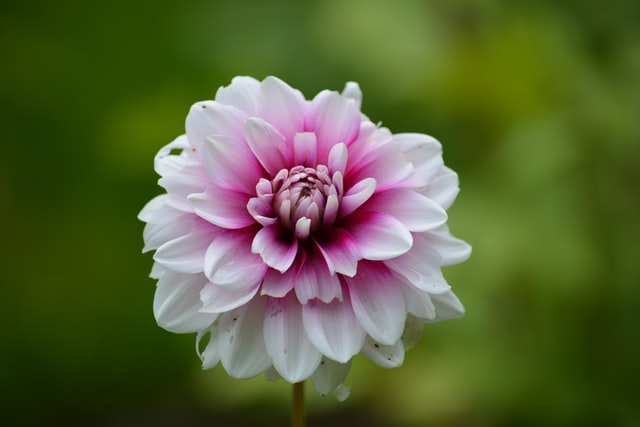

this is our flower for our clients this week we hope to be good for you
| Rafflesia arnoldii, commonly called the corpse lily or stinking corpse lily, is a species of flowering plant in the parasitic genus Rafflesia. | |
Most flowers have four main parts: sepals, petals, stamens, and carpels. The stamens are the male part whereas the carpels are the female part of the flower. | |
| Daisy Flower best service of online flowers delivery in Egypt - Daisy Flower Florist is the ideal online flower shop. Order now for same day flower delivery. | |
Since 1998, Fresh flowers from Holland, Same day delivery, Best quality, Secure payment, Modern designs. YOUR EXPERIENCE AWAITS. | |
| A flower, sometimes known as a bloom or blossom, is the reproductive structure found in flowering plants The biological function of a flower is to facilitate ... | The flowers that are most commonly referred to as the rarest ones are Corpse Flower, Jade Vine, and Ghost Orchid. |  |